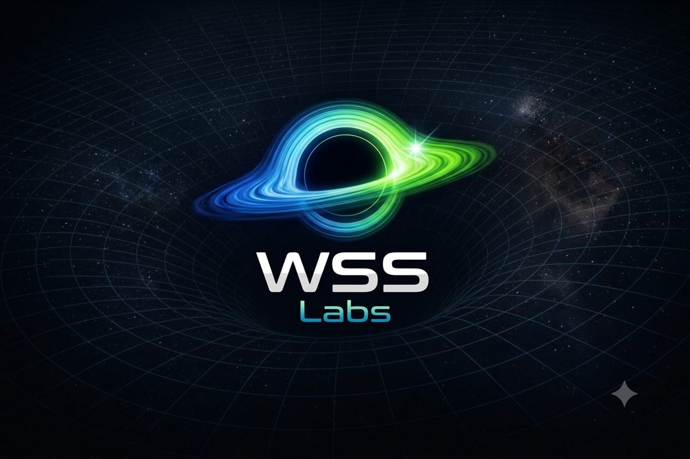

Laboratório de sistemas · Brasil
A gente estuda o problema
até o fim. Aí constrói.
A WSS Labs é um laboratório de software. Não entregamos protótipo bonito: entregamos sistema que aguenta o uso de todo dia — com login, nuvem, cobrança e alguém do outro lado quando quebra.
O que já está no ar
Sistemas da WSS Labs
Cada produto nasce de um problema que a gente viu de perto, viveu e não achou resolvido em lugar nenhum.
Método
Como um sistema nasce aqui
Nesta ordem, sempre. Pular etapa é o que produz software que ninguém usa.
Entender a regra
Antes de escrever qualquer linha, aprendemos a regra do negócio. No Cripto Control isso significou ler a Lei 14.754 e a IN 1.888 inteiras.
Construir o menor pedaço útil
A primeira versão precisa resolver alguma coisa de verdade. Recurso que não resolve nada fica de fora.
Testar com quem vai usar
Uso real, dado real, no celular e no computador. É aqui que a maior parte das ideias bonitas cai.
Publicar e continuar
Domínio, nuvem, login, cobrança e manutenção. Publicar é o começo do sistema, não o fim do projeto.
Para empresas
Sistema sob medida
Além dos produtos próprios, o laboratório constrói para quem já sabe onde dói.
Sistema do zero
Do desenho da regra até o sistema no ar, com login, banco de dados e acesso pelo celular.
Integração e automação
Conectar sistemas que hoje não se falam. APIs, importação de CSV, PDF e e-mail — o que existir, a gente traz.
Sair da planilha
Aquela planilha que só uma pessoa entende vira um sistema com histórico, permissão e backup.
Publicar e manter
Hospedagem, domínio, segurança, cobrança recorrente e suporte depois que entra no ar.

O símbolo
Um centro gravitacional de inovação
O buraco negro não foi escolhido por ser bonito. Ele descreve como o laboratório trabalha: atrair problemas complexos, aguentar a profundidade técnica que eles exigem e devolver algo com forma.
- O núcleo
- Profundidade técnica e poder de transformação — o ponto onde ideia, tecnologia e criatividade convergem.
- As órbitas
- Fluxos de dados e energia. Azul, turquesa e verde: tecnologia, energia e crescimento — as mesmas cores de todos os produtos WSS.
- O brilho lateral
- O instante em que a ideia nasce e se expande. Descoberta, não decoração.
- A malha curva
- Gravidade e atração: uma empresa que atrai soluções e distorce os limites da tecnologia.
Contato
Conta pra gente onde dói.
Se você tem um processo travado, uma planilha impossível ou uma ideia de produto, a primeira conversa é de graça e serve pra entender se dá pé.